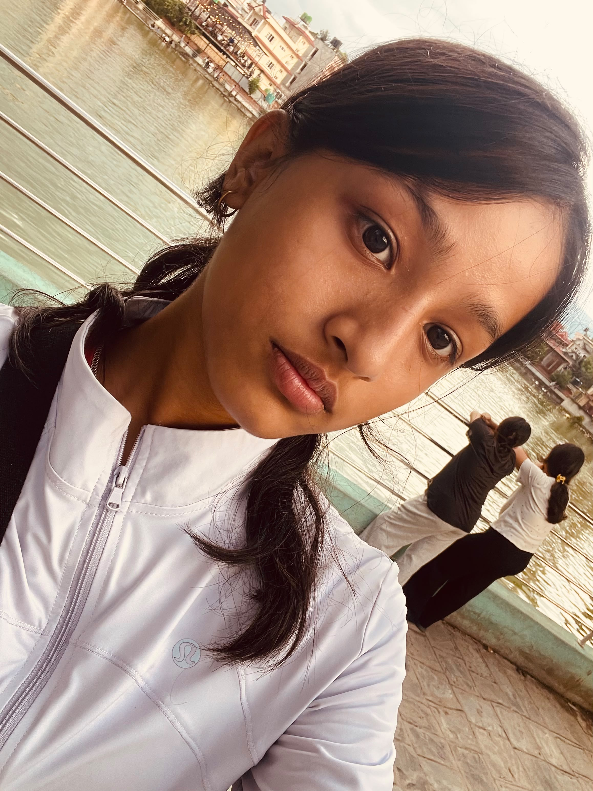
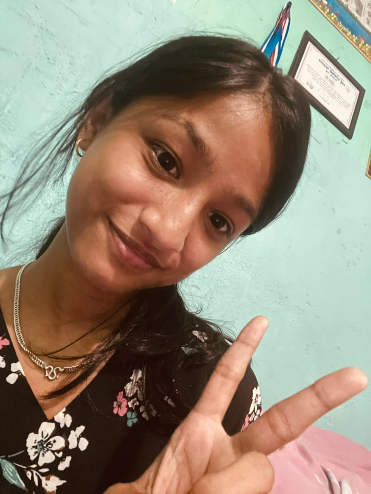

Ambition
You do not need a loud announcement to take your goals seriously. There is a steady drive in you, and it is going places.
Bhadra 28, 2083 BS
Open the nightA small digital celebration
For the ambitious, creative, emotionally strong, occasionally sarcastic, very good-at-studies person turning 15.
Take a look01 / the occasion
15years, celebrated
in Bhadra 2083
September 14, 2011 was the beginning. Today is a pause to notice who Anupa is becoming, and to make a little room for everything still ahead.
02 / the character study
You do not need a loud announcement to take your goals seriously. There is a steady drive in you, and it is going places.
You notice details. You bring your own angle. That kind of imagination is useful far beyond a birthday page.
Emotionally strong does not mean emotionless. It means you keep your footing, even when the day gets complicated.
A little dry commentary has its place. Yours usually arrives at exactly the right time.
Being very good at studies is one part of the picture. The way you keep learning is the more interesting part.
03 / something noticed
“You talk to me in a way that feels different. Comfortable, honest, and entirely your own. I appreciate that more than I probably say.”
04 / the archive
The photographs stay yours. This page just gives them a little breathing room.


Scroll across, then click any frame to open it.
05 / the soundtrack
A favorite by Prakash Dutraj belongs here. The final playlist is yours to choose.
06 / a note for later
Dear Anupa,
Happy 15th birthday. This is a small celebration of the person you already are, not a prediction of who you are supposed to be.
You have ambition, creativity, a strong sense of self, and the kind of sarcasm that keeps a conversation awake. You also have a mind that works hard. Keep all of that. It is a good combination.
We met through programs and events, but what stayed with me was the way you talk: different from how most people do, comfortable in a way that feels natural. That is worth appreciating.
There is a lot ahead of you. I hope this year gives you room to learn, make things, change your mind, laugh at your own jokes, and keep moving toward the life you want.
Happy birthday, Anupa.
Keep becoming more yourself.
One more thing
May 15 feel less like a number and more like a doorway.
Enter the birthday room